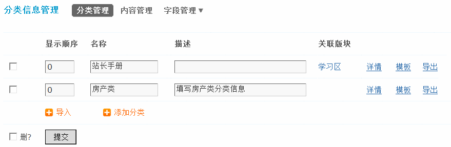
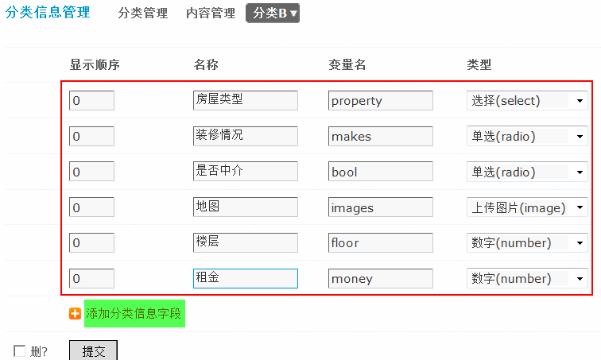
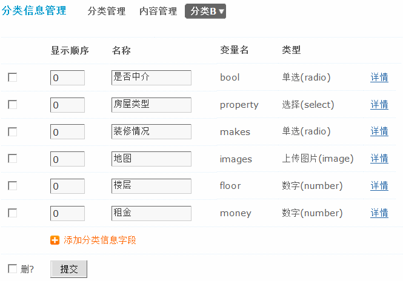
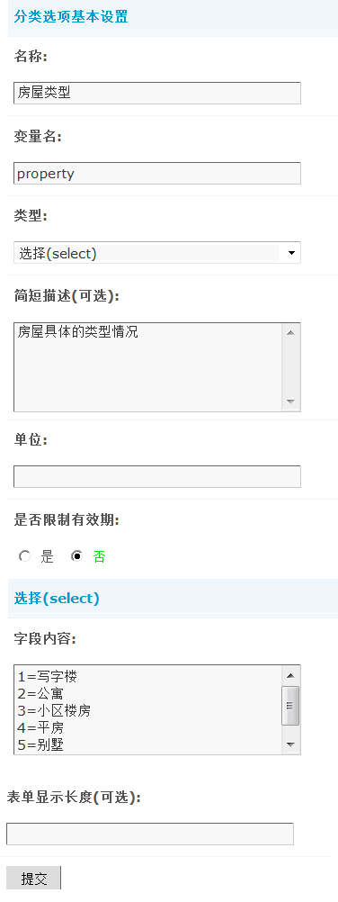
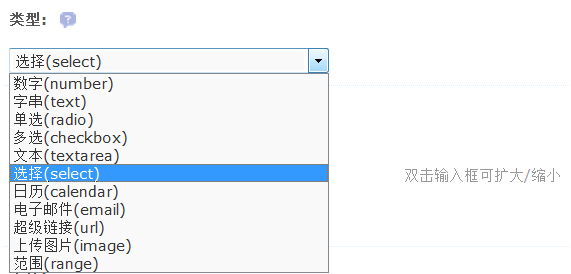
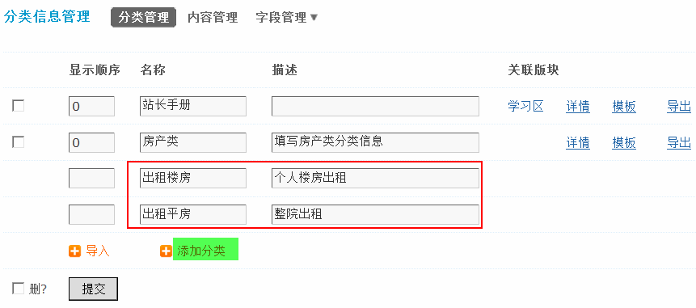
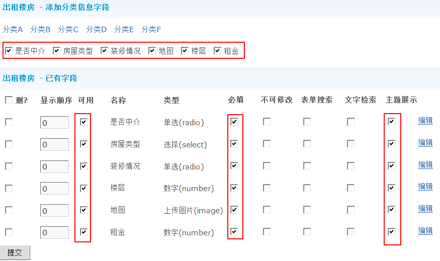
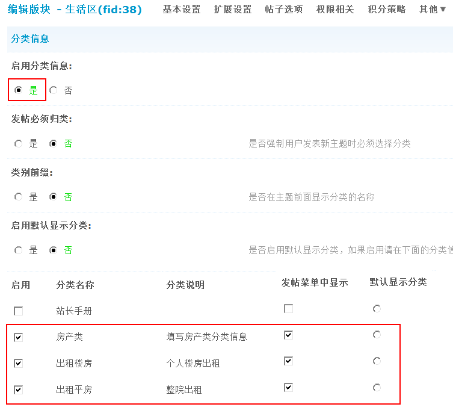
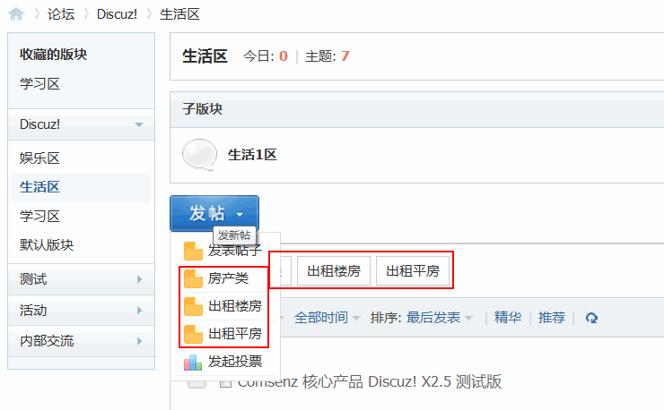
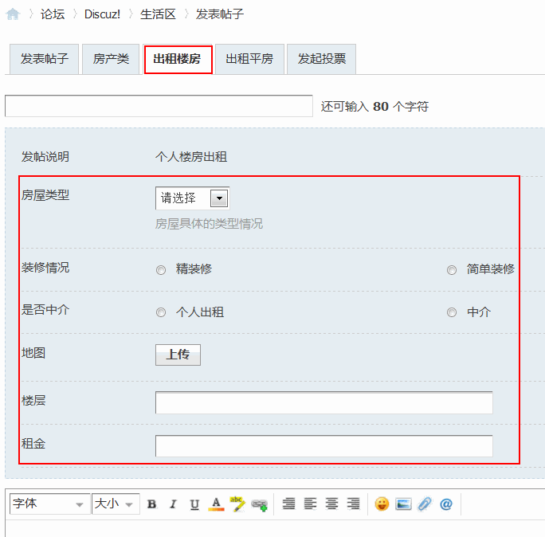

分类信息
分类信息功能帮助站长更方便地建立自己的分类信息频道。
操作路径：【后台】=>【论坛】=>【分类信息】
一、添加分类字段
操作路径：【后台】=>【论坛】=>【分类信息】=>【分类信息管理】=>【字段管理】=>选择某一个分类，在这里添加分类信息使用的变量，名称如房屋类型、装修情况、是否中介等。
变量名：填写相应名称的变量。
需要注意的是：这里的变量名必须填写。
类型中，根据该功能的不同，选择不同的类型，如地图选择上传图片(image)类型、房屋类型选择(select)类型、楼层可以选择数字(number)类型等。
点击“添加分类信息字段”链接即可添加分类信息选项
添加完成后，如下图所示：
点击“详情”可以对每一个项目进行编辑修改等详细设置。
名称：填写分类选项的名称。
变量名：填写分类信息变量名。
类型：选择分类选项的类型。这里共有11种类型，如下图所示：
简短描述：对该分类选项的简单说明。
单位：可以留空默认。
是否限制有效期：选择“是”则超过有效期信息自动隐藏
选择(select)：填写字段内容，只在项目为可选时有效，每行一个字段，等号前面为字段索引(建议用数字)，后面为内容。如：
1=写字楼
2=公寓
3=小区楼房
4=平房
5=别墅
6=地下室
选择的类型不同，选项的内容会不相同。
表单显示长度(可选)：填写表单的显示长度值。
二、添加分类
操作路径：【后台】=>【论坛】=>【分类信息】=>【分类管理】中添加
填写要添加分类的显示顺序、名称、描述，然后提交即可，这里我们添加两个分类，如出租楼房和出租平房。
添加完毕后，设置详情，如下图所示：
添加分类信息字段：这里点选要显示的分类。
已有字段：这里会列出已经选择好的字段，可以设置为是否可用、是否为必填项、是否不可修改、是否参与搜索，是否进行主题展示等操作。
三、关联版块
分类信息添加成功后，必须关联版块，用户才可以在关联到的版块发布该类别信息。
操作路径：【后台】=>【论坛】=>【版块管理】=> 编辑要关联分类信息的版块 => 其它 => 分类信息，启用分类信息
选择要启用的分类即可。
四、在前台显示效果
设置好分类后，在版块列表以及发帖时都可以看到分类信息
选择某个分类信息后，发表帖子，效果如下：
这样分类信息就设置完成了。